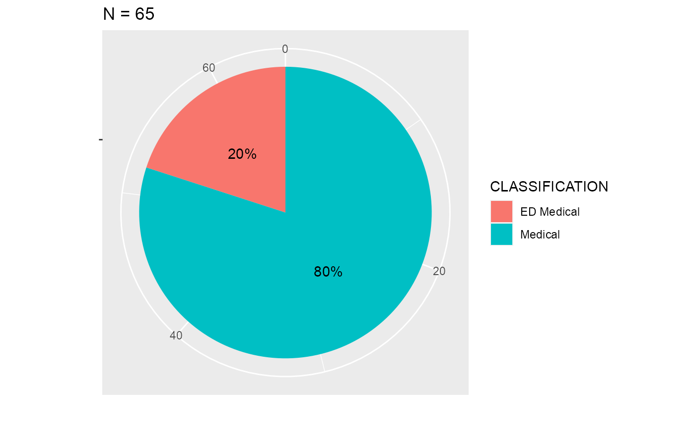
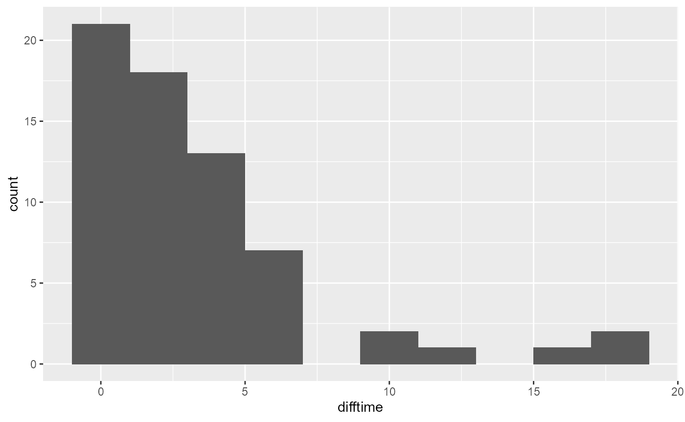

## ICD10 definitions
UNSTABLE_ANGINA <- "I20.0"
STEMI <- c(glue::glue("I21.{0:3}"))
NSTEMI <- "I21.4"
UNSPECIFIED_ACS <- "I21.9"
## SNOMED PATTIENT
STEMI_SNOMED <- "(?i)acute( inferior | anterior |\\s)st segment elevation|(ST elevation myocardial infarction)|(Acute STEMI)"
#load("../data/diagnosis_data.rda")
#load("../data/encounter_data.rda")
#diagnosis_rns <- diagnosis_data
#encounter_rns <- encounter_data
encounter_rns <- tar_read(encounter_rns)
diagnosis_rns <- tar_read(diagnosis_rns)We analyse encounters that have occurred at RNS with an admission time stamp between 2017-03-31 - 2017-06-29
We filter the encounters by STEMI-defined ICD10 codes which are:
The number of unique STEMI ICD10 encounters is 101
Below are the frequencies of each code.| Var1 | Freq |
|---|---|
| ACUTE TRANSMURAL MYOCARDIAL INFARCTION OF ANTERIOR WALL | 36 |
| ACUTE TRANSMURAL MYOCARDIAL INFARCTION OF INFERIOR WALL | 38 |
| ACUTE TRANSMURAL MYOCARDIAL INFARCTION OF OTHER SITES | 3 |
| ACUTE TRANSMURAL MYOCARDIAL INFARCTION OF UNSPECIFIED SITE | 24 |
The number of unique STEMI encounters with at least ONE SNOMED code is 87
We show the top 20 SNOMED codes for those ICD10-defined STEMI encounters| SOURCE_STRING_CAP | count |
|---|---|
| STEMI - ST ELEVATION MYOCARDIAL INFARCTION | 32 |
| ACUTE STEMI (ST ELEVATION MYOCARDIAL INFARCTION) OF ANTERIOR WALL | 12 |
| ACUTE STEMI (ST ELEVATION MYOCARDIAL INFARCTION) OF INFERIOR WALL | 11 |
| PCI - PERCUTANEOUS CORONARY INTERVENTION | 6 |
| CARDIAC ARREST | 4 |
| NSTEMI - NON-ST SEGMENT ELEVATION MI | 4 |
| ACUTE MYOCARDIAL INFARCTION | 3 |
| ACUTE PULMONARY OEDEMA | 3 |
| AMI - ACUTE MYOCARDIAL INFARCTION | 3 |
| CABG X 3 - CORONARY ARTERY BYPASS GRAFTS X 3 | 3 |
| CHEST PAIN | 3 |
| COMMUNITY ACQUIRED PNEUMONIA | 3 |
| ACS - ACUTE CORONARY SYNDROME | 2 |
| ACUTE ANTERIOR MYOCARDIAL INFARCTION | 2 |
| AF - ATRIAL FIBRILLATION | 2 |
| BRADYCARDIA | 2 |
| CAD - CORONARY ARTERY DISEASE | 2 |
| CARDIAC ARREST - VENTRICULAR FIBRILLATION | 2 |
| CARDIOGENIC SHOCK | 2 |
| DIABETES MELLITUS TYPE 2 | 2 |
| EMERGENCY PERCUTANEOUS CORONARY INTERVENTION | 2 |
| HYPERCHOLESTEROLAEMIA | 2 |
We can see that some of the SNOMED codes are not associated with a STEMI-defined ICD10 code (e.g. SALAMI).
The table below, shows a filtered version of the above table but only with STEMI-related SNOMED codes.
pattern <-"(?i)acute( inferior | anterior |\\s)st segment elevation|(?i)(ST elevation myocardial infarction)|(?i)(Acute STEMI)|(?i)(Acute MYOCARDIAL INFARCTION)"
temp <-icd10_stemi_w_snomed %>%
dplyr::filter(stringr::str_detect(SOURCE_STRING_CAP, pattern))
temp %>% dplyr::group_by(SOURCE_STRING_CAP) %>%
dplyr::summarise(count=dplyr::n()) %>%
dplyr::arrange(desc(count)) %>%
knitr::kable(.,format = "html", table.attr = "style='width:50%;'") %>%
kableExtra::kable_styling()| SOURCE_STRING_CAP | count |
|---|---|
| STEMI - ST ELEVATION MYOCARDIAL INFARCTION | 32 |
| ACUTE STEMI (ST ELEVATION MYOCARDIAL INFARCTION) OF ANTERIOR WALL | 12 |
| ACUTE STEMI (ST ELEVATION MYOCARDIAL INFARCTION) OF INFERIOR WALL | 11 |
| ACUTE MYOCARDIAL INFARCTION | 3 |
| AMI - ACUTE MYOCARDIAL INFARCTION | 3 |
| SUBSEQUENT STEMI (ST ELEVATION MYOCARDIAL INFARCTION) OF INFERIOR WALL | 1 |
counts <- c(dplyr::n_distinct(icd10_stemi$ENCNTR_KEY),
dplyr::n_distinct(icd10_stemi_w_snomed$ENCNTR_KEY),
dplyr::n_distinct(temp$ENCNTR_KEY))
percent <- counts/dplyr::n_distinct(icd10_stemi$ENCNTR_KEY)*100
values <- c("ICD10-STEMI Encounters",
"ICD10-STEMI w/ ANY SNOMED",
"ICD10-STEMI w/ STEMI SNOMED")
knitr::kable(data.frame(values,counts,percent),format = "html", table.attr = "style='width:50%;'") %>%
kableExtra::kable_styling()| values | counts | percent |
|---|---|---|
| ICD10-STEMI Encounters | 101 | 100.00000 |
| ICD10-STEMI w/ ANY SNOMED | 87 | 86.13861 |
| ICD10-STEMI w/ STEMI SNOMED | 59 | 58.41584 |
So to summarise, there are 101 with STEMI-defined ICD10 codes and only 59 have a STEMI-related SNOMED code.
We look at encounters where the confirmation status of the diagnosis was confirmed AND the classification of the diagnosis was either ED Medical or Medical or ED Nursing.
We searched STEMI encounters based on SNOMED code using the following search filter (sample examples):
The SNOMED codes are discovered through a CSIRO developed tool Shrimp where the tool shows the hierarchy for a given SNOMED code. For example, by entering acute myocardial infarction, it is shown that the condition is a subset of acute ischaemic heart disease and mycoardial infarction and that there are over 23 sub-related conditions of AMI, of which some of them can be broken down further into a smaller subgroup.
This returned 0 unique encounters and of those 0 had an ICD10 code.
Below shows the breakdown of the SNOMED codes for the STEMI cohort as defined by SNOMED.
table<- snomed_stemi %>%
dplyr::group_by(SOURCE_STRING_CAP) %>%
dplyr::summarise(count=dplyr::n()) %>%
dplyr::arrange(desc(count))
knitr::kable(table %>% dplyr::top_n(20),format = "html", table.attr = "style='width:50%;'") %>%
kableExtra::kable_styling()| SOURCE_STRING_CAP | count |
|---|---|
| STEMI - ST ELEVATION MYOCARDIAL INFARCTION | 39 |
| ACUTE STEMI (ST ELEVATION MYOCARDIAL INFARCTION) OF ANTERIOR WALL | 14 |
| ACUTE STEMI (ST ELEVATION MYOCARDIAL INFARCTION) OF INFERIOR WALL | 11 |
| SUBSEQUENT STEMI (ST ELEVATION MYOCARDIAL INFARCTION) OF INFERIOR WALL | 1 |
Below shows the ICD10 codes for the SNOMED STEMI-defined cohort. The results show that quite a number of the STEMI-SNOMED cohort are associated with multiple ICD10 codes, in particular ATHEROSCLEROTIC HEART DISEASE, OF NATIVE CORONARY ARTERY.
code_names <- snomed_stemi_w_icd10 %>%
dplyr::distinct(DISPLAY_IDENTIFIER,SOURCE_STRING_CAP)
table<- snomed_stemi_w_icd10 %>%
dplyr::group_by(DISPLAY_IDENTIFIER) %>%
dplyr::summarise(count=dplyr::n()) %>%
dplyr::ungroup() %>%
dplyr::left_join(code_names, by ="DISPLAY_IDENTIFIER") %>%
dplyr::arrange(desc(count))
knitr::kable(table%>% dplyr::top_n(20,wt=count),format = "html", table.attr = "style='width:80%;'") %>%
kableExtra::kable_styling()| DISPLAY_IDENTIFIER | count | SOURCE_STRING_CAP |
|---|---|---|
| I25.11 | 49 | ATHEROSCLEROTIC HEART DISEASE, OF NATIVE CORONARY ARTERY |
| U82.3 | 28 | HYPERTENSION |
| I21.1 | 23 | ACUTE TRANSMURAL MYOCARDIAL INFARCTION OF INFERIOR WALL |
| I21.0 | 21 | ACUTE TRANSMURAL MYOCARDIAL INFARCTION OF ANTERIOR WALL |
| I95.9 | 20 | HYPOTENSION, UNSPECIFIED |
| Z72.0 | 15 | TOBACCO USE, CURRENT |
| Y92.22 | 14 | PLACE OF OCCURRENCE, HEALTH SERVICE AREA |
| Z86.43 | 13 | PERSONAL HISTORY OF TOBACCO USE DISORDER |
| I10 | 10 | ESSENTIAL (PRIMARY) HYPERTENSION |
| I21.3 | 10 | ACUTE TRANSMURAL MYOCARDIAL INFARCTION OF UNSPECIFIED SITE |
| E87.6 | 8 | HYPOKALAEMIA |
| E11.72 | 7 | TYPE 2 DIABETES MELLITUS WITH FEATURES OF INSULIN RESISTANCE |
| E83.4 | 6 | DISORDERS OF MAGNESIUM METABOLISM |
| I21.4 | 6 | ACUTE SUBENDOCARDIAL MYOCARDIAL INFARCTION |
| I47.2 | 6 | VENTRICULAR TACHYCARDIA |
| I48.9 | 6 | ATRIAL FIBRILLATION AND ATRIAL FLUTTER, UNSPECIFIED |
| I49.0 | 6 | VENTRICULAR FIBRILLATION AND FLUTTER |
| R00.1 | 6 | BRADYCARDIA, UNSPECIFIED |
| U78.1 | 6 | OBESITY |
| E66.9 | 5 | OBESITY, UNSPECIFIED |
| E78.0 | 5 | PURE HYPERCHOLESTEROLAEMIA |
| T81.0 | 5 | HAEMORRHAGE AND HAEMATOMA COMPLICATING A PROCEDURE, NOT ELSEWHERE CLASSIFIED |
| U86.2 | 5 | ARTHRITIS AND OSTEOARTHRITIS |
| Y84.0 | 5 | CARDIAC CATHETERISATION AS THE CAUSE OF ABNORMAL REACTION OF THE PATIENT, OR OF LATER COMPLICATION, WITHOUT MENTION OF MISADVENTURE AT THE TIME OF THE PROCEDURE |
temp <-snomed_stemi_w_icd10 %>%
dplyr::filter(DISPLAY_IDENTIFIER %in% STEMI)
counts <- c(dplyr::n_distinct(snomed_stemi$ENCNTR_KEY),
dplyr::n_distinct(snomed_stemi_w_icd10$ENCNTR_KEY),
dplyr::n_distinct(temp$ENCNTR_KEY))
percent <- counts/dplyr::n_distinct(snomed_stemi$ENCNTR_KEY)*100
values <- c("SNOMED-STEMI Encounters",
"SNOMED-STEMI w/ ANY ICD-10",
"SNOMED-STEMI w/ STEMI ICD-10")
knitr::kable(data.frame(values,counts,percent),format = "html", table.attr = "style='width:50%;'") %>%
kableExtra::kable_styling()| values | counts | percent |
|---|---|---|
| SNOMED-STEMI Encounters | 64 | 100.0000 |
| SNOMED-STEMI w/ ANY ICD-10 | 64 | 100.0000 |
| SNOMED-STEMI w/ STEMI ICD-10 | 55 | 85.9375 |
Looking at all the STEMI-defined SNOMED codes, we show the breakdown of the classification of the diagnosis, N = 65
snomed_stemi %>%
dplyr::group_by(CLASSIFICATION) %>%
dplyr::summarise(count = n()) %>%
dplyr::ungroup() %>%
dplyr::mutate(per=count/sum(count)) %>%
ggplot2::ggplot(., ggplot2::aes(x="",y=count, fill=CLASSIFICATION))+
ggplot2::geom_bar(width = 1, stat = "identity") +
ggplot2::coord_polar("y", start=0) + ggplot2::xlab("") + ggplot2::ggtitle(paste0("N = ", nrow(snomed_stemi))) + ggplot2::ylab("") +
ggplot2::geom_text(ggplot2::aes(label = scales::percent(per)), position = ggplot2::position_stack(vjust = 0.5))
We repeat the same for the diagnosis type
snomed_stemi %>%
dplyr::group_by(DIAGNOSIS_TYPE) %>%
dplyr::summarise(count = n()) %>%
dplyr::ungroup() %>%
dplyr::mutate(per=count/sum(count)) %>%
ggplot2::ggplot(., ggplot2::aes(x="",y=count, fill=DIAGNOSIS_TYPE))+
ggplot2::geom_bar(width = 1, stat = "identity") +
ggplot2::coord_polar("y", start=0) + ggplot2::xlab("") + ggplot2::ggtitle(paste0("N = ", nrow(snomed_stemi))) + ggplot2::ylab("") +
ggplot2::geom_text(ggplot2::aes(label = scales::percent(per)), position = ggplot2::position_stack(vjust = 0.5))Most discharge diagnoses are associated with ED medical and all final diagnoses is considered as a Medical classification.
snomed_stemi %>%
dplyr::group_by(DIAGNOSIS_TYPE,CLASSIFICATION) %>%
dplyr::summarise(count = n()) %>%
dplyr::ungroup() %>%
knitr::kable(.,format = "html", table.attr = "style='width:50%;'") %>%
kableExtra::kable_styling()| DIAGNOSIS_TYPE | CLASSIFICATION | count |
|---|---|---|
| Discharge | ED Medical | 13 |
| Final | Medical | 52 |
We look at the difference between the time stamps of the STEMI-defined SNOMED diagnosis and their admission time to look at the delay between their admission and when the SNOMED code was registered into the system.
test <- snomed_stemi %>%
dplyr::left_join(encounter_rns, by = "ENCNTR_KEY") %>%
dplyr::mutate(difftime = difftime(DIAGNOSIS_START_DTTM,ADMIT_DTTM, unit="days"))
ggplot2::ggplot(test, ggplot2::aes(x=difftime))+
ggplot2::geom_histogram(binwidth=2) 
knitr::kable(dplyr::summarise(test,mean=mean(difftime),
std=sd(difftime)),format = "html", table.attr = "style='width:50%;'") %>%
kableExtra::kable_styling()| mean | std |
|---|---|
| 3.354327 days | 3.980117 |
icd10_snomed_stemi_intersect <- dplyr::intersect(icd10_stemi$ENCNTR_KEY, snomed_stemi$ENCNTR_KEY)
icd10_snomed_stemi_union <- dplyr::union(icd10_stemi$ENCNTR_KEY, snomed_stemi$ENCNTR_KEY)
message(length(unique(icd10_snomed_stemi_intersect)))
message(length(unique(icd10_snomed_stemi_union)))The number of unique encounters with a STEMI-defined ICD10 code OR STEMI-defined SNOMED code (the union) is 110
The number of unique encounters with a STEMI-defined ICD10 code AND STEMI-defined SNOMED code (the intersection) 55
Below we show a contingency table (confusion matrix) of the ICD10 and SNOMED codes N = 110.
cm <- data.frame(ENCNTR_KEY = icd10_snomed_stemi_union) %>%
dplyr::mutate(
ICD10 = dplyr::case_when(
ENCNTR_KEY %in% icd10_stemi$ENCNTR_KEY ~ "STEMI-ICD10",
TRUE ~ "NOT STEMI-ICD10"
),
SNOMED = dplyr::case_when(
ENCNTR_KEY %in% snomed_stemi$ENCNTR_KEY ~ "STEMI-SNOMED",
TRUE ~ "NOT STEMI-SNOMED"
))
knitr::kable(table(cm$ICD10,cm$SNOMED),format = "html", table.attr = "style='width:70%;'") %>%
kableExtra::kable_styling()| NOT STEMI-SNOMED | STEMI-SNOMED | |
|---|---|---|
| NOT STEMI-ICD10 | 0 | 9 |
| STEMI-ICD10 | 46 | 55 |
For example, of the 110 encounters with either a STEMI ICD10 or SNOMED code, only 50.00% have both a STEMI ICD10 AND STEMI SNOMED code and 41.82% have a STEMI ICD10 but NOT a STEMI SNOMED code.
knitr::kable(table(cm$ICD10,cm$SNOMED)/dplyr::n_distinct(icd10_snomed_stemi_union)*100,format = "html", table.attr = "style='width:70%;'") %>%
kableExtra::kable_styling()| NOT STEMI-SNOMED | STEMI-SNOMED | |
|---|---|---|
| NOT STEMI-ICD10 | 0.00000 | 8.181818 |
| STEMI-ICD10 | 41.81818 | 50.000000 |